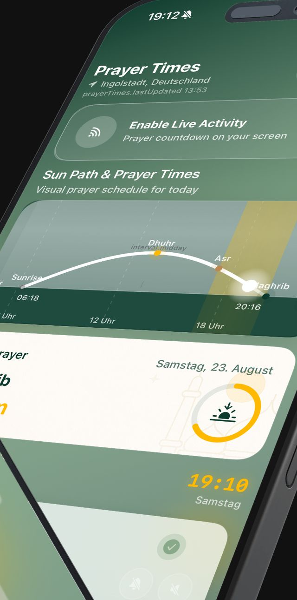
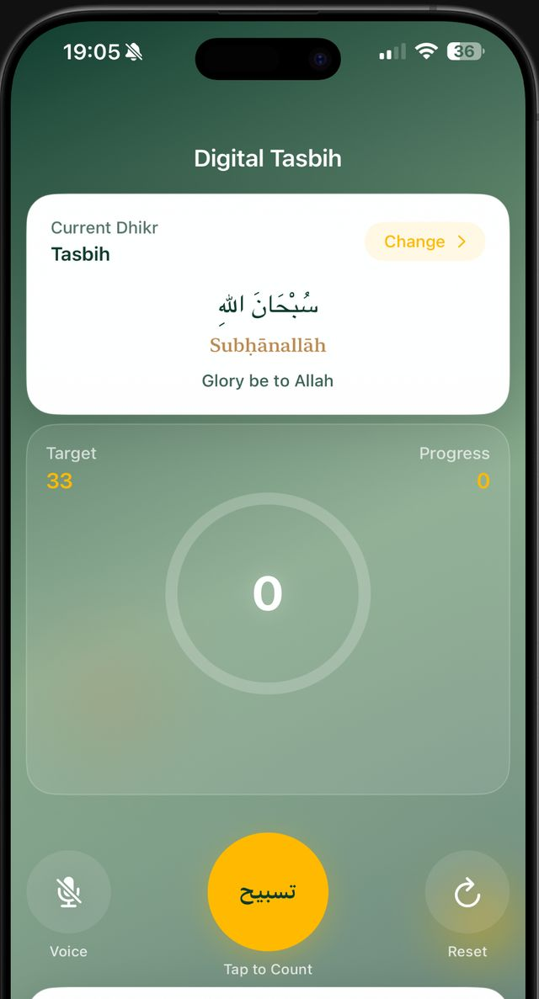
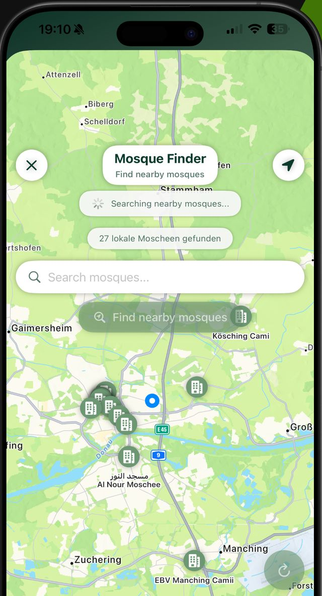
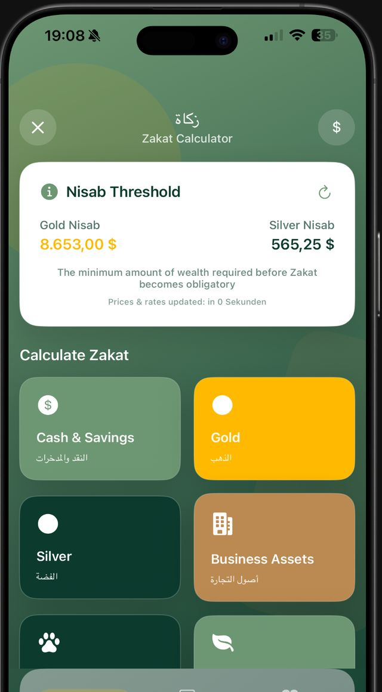
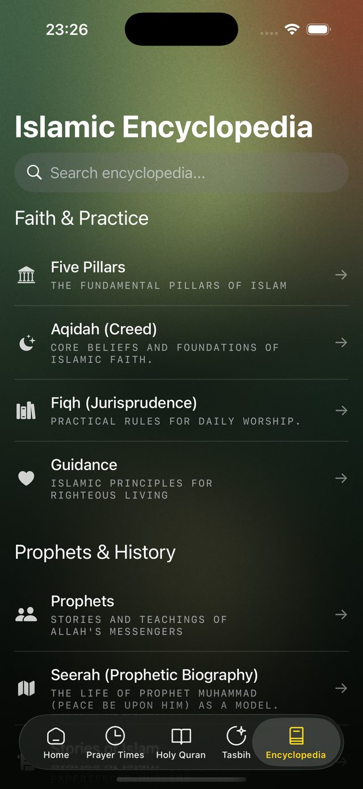

Jadwal salat, dihitung di ponsel Anda.
Rowhni menghitung lima waktu salat dari tempat Anda berada, tanpa mengirim lokasi Anda ke mana pun. Aplikasi ini juga menghitung zikir lewat suara, menyimpan posisi bacaan Al-Qur'an, menemukan masjid terdekat, dan menghitung zakat.
Gratis. Perlu iOS 18 atau lebih baru, atau Android.
| Salat | Waktu |
|---|---|
| Subuh الفجر Berikutnya | — |
| Terbit الشروق | — |
| Zuhur الظهر Berikutnya | — |
| Asar العصر Berikutnya | — |
| Magrib المغرب Berikutnya | — |
| Isya العشاء Berikutnya | — |
Peramban Anda menghitung waktu-waktu ini dari koordinat kota dengan metode astronomi yang sama seperti aplikasinya. Tidak ada yang dikirim ke server.
Apa yang dilakukannya
Lima waktu salat, dan matahari di baliknya
Waktu dihitung dari koordinat Anda memakai geometri matahari yang lazim, sehingga tetap tepat di mana pun Anda berada. Lintasan matahari menampilkan satu hari penuh sekaligus, dan Live Activity menaruh hitung mundur ke salat berikutnya di layar kunci.
- Beberapa metode perhitungan, agar cocok dengan masjid Anda
- Notifikasi azan yang bisa diatur per waktu salat
- Arah kiblat dari posisi Anda

Tasbih yang mendengarkan
Ucapkan zikirnya, penghitung mengikuti. Aplikasi mengenali lafalnya dalam bahasa Arab maupun transliterasi, sehingga tangan dan mata Anda tetap bebas. Menghitung dengan sentuhan tetap tersedia bila bersuara kurang pas.
- Pengenalan berjalan di perangkat
- Target untuk tiap zikir, lengkap dengan riwayat hari itu

Posisi bacaan Al-Qur'an Anda, tersimpan
Progres dicatat per juz, surah, dan ayat, jadi melanjutkan bacaan tidak bergantung pada ingatan. Terjemahan dan murottal tersedia di samping teksnya.
Masjid di dekat Anda
Peta masjid di sekitar posisi Anda, bisa dicari berdasarkan nama, untuk saat Anda berada di tempat asing dan mencari jemaah.

Zakat, dihitung langkah demi langkah
Ambang nisab dalam emas dan perak, diperbarui dengan harga logam terkini, serta pos terpisah untuk kas, emas, perak, aset usaha, dan hewan ternak.

Ensiklopedia untuk dibaca
Para nabi dan kisahnya, kumpulan hadis, dan kuis untuk menguji apa yang tersimpan. Ditulis untuk dibaca, bukan dilewati sekilas.

Apa yang keluar dari ponsel Anda
Jawaban singkatnya: lokasi Anda tidak. Jawaban panjangnya ada di kebijakan privasi, yang ditulis untuk dibaca, bukan sekadar disetujui.
- Lokasi
- Dipakai di perangkat untuk menghitung waktu dan arah kiblat. Tidak dikirim, tidak disimpan di server.
- Suara
- Pengenalan zikir berjalan di perangkat. Tidak ada audio yang diunggah.
- Situs ini
- Tanpa kuki, tanpa analitik, tanpa permintaan ke pihak ketiga. Fontnya pun dilayani dari domain ini.
- Akun Anda
- Anda bisa menghapusnya beserta datanya tanpa perlu menghubungi siapa pun.
Coba pada salat berikutnya
Gratis di kedua toko. Kalau tidak cocok dengan cara Anda beribadah, hapus saja; bagaimanapun tidak ada yang tertinggal di sisi kami.